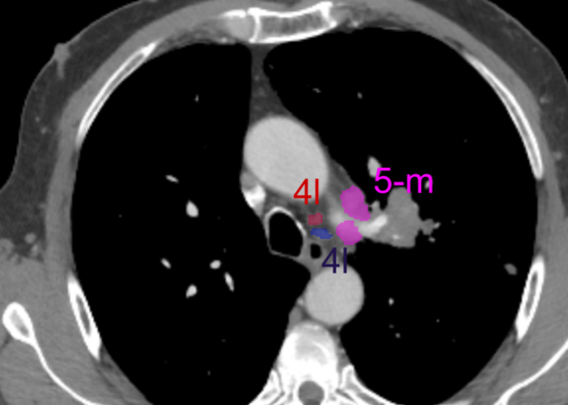
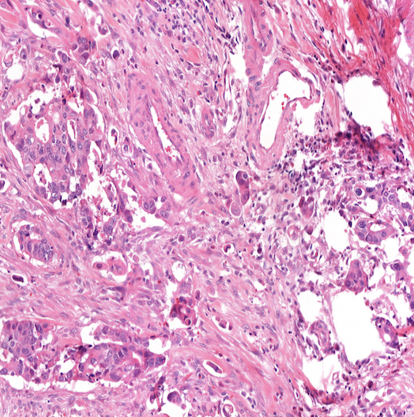
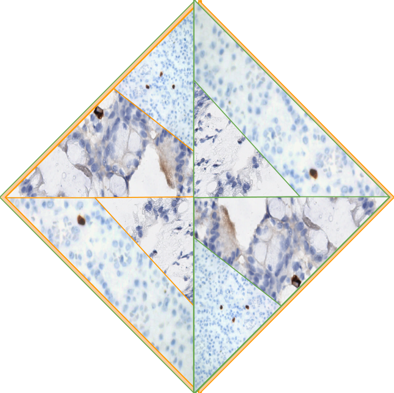
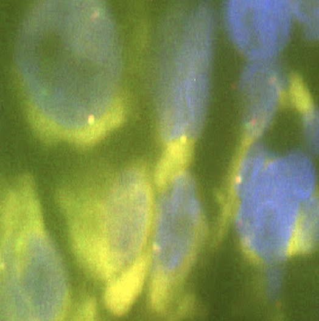
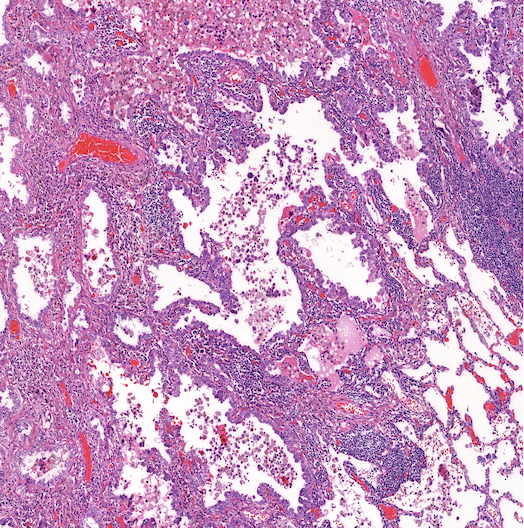
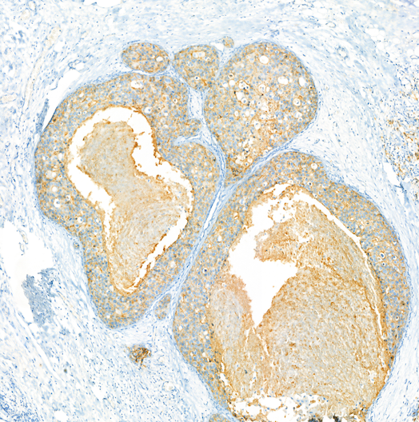

Projects

Mediastinal Lymph Node Analysis
MLN Detections & Station Classification
CT
3D segmentation
Multi-Label Classification
Feature Engineering
IASLC

Tumor Budding Detection
Tumor budding detection in Whole Slide Imaging
WSI Analysis
Detection
Context-aware architecture

Cytomegalovirus Detection
CMV detection and analysis
Detection
Clinical workflow integration
Color deconvolution
Pathology

Fluorescence in Situ Hybridization Analysis
FISH cell detection and signal analysis
Segmentation & Detection
Channelwise analysis
Transfer learning

H&E to DAPI Mapping
Mapping regions using SIFT algorithm for pathologists
SIFT Algorithm
Color deconvolution
Image processing
H&E Staining

HER2 Scoring
Breast cancer diagnosis with four-class categorization.
IHC Analysis
Breast Cancer
Classification
Pathology